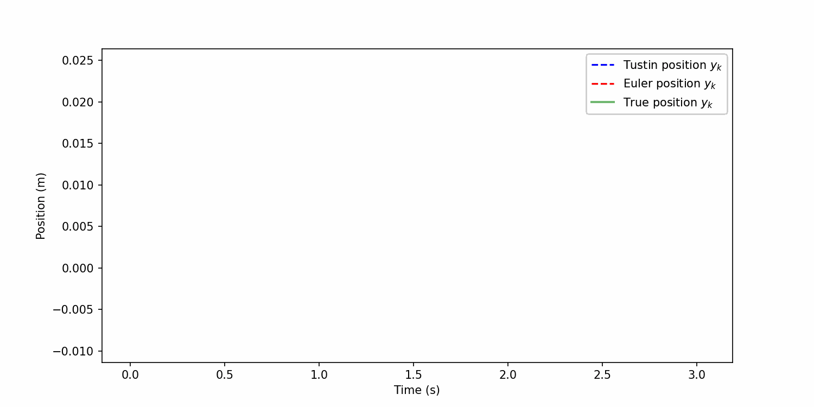

import jax
import jax.numpy as np
from jax.numpy.linalg import inv
from scipy.integrate import solve_ivp
class IVP_Solvers:
def __init__(self, A, B, C, u, T, step, x0):
"""
Initializes the IVP_Solvers class with the given parameters.
Args:
A (numpy.ndarray): The state transition matrix with shape (N, N).
B (numpy.ndarray): The input matrix with shape (N, 1).
C (numpy.ndarray): The output matrix with shape (1, N).
u (function): The input signal function.
T (float): The total time of the simulation.
step (float): The time step size.
x0 (numpy.ndarray): The initial state vector with shape (N,).
Returns:
None
"""
self.A = A
self.B = B
self.C = C
self.T = T
self.u = u
self.step = step
self.x0 = x0
self.n = A.shape[0]
self.ts = np.linspace(0, self.T, int(
self.T / self.step), endpoint=True)
def discretize(self):
"""
Discretizes the system using the Tustin's method. Follows the implementation
of the AnnotatedS4 blog post (https://srush.github.io/annotated-s4/).
Returns:
Ab (ndarray): The discretized A matrix.
Bb (ndarray): The discretized B matrix.
"""
I = np.eye(self.n)
BL = inv(I - (self.step / 2.0) * self.A)
Ab = BL @ (I + (self.step / 2.0) * self.A)
Bb = (BL * self.step) @ self.B
return Ab, Bb
def tustin(self):
"""
Simulates the system using the Tustin's method.
Returns:
y (ndarray): The output vector of shape (K, 1) where K is the number of time steps.
"""
Ab, Bb = self.discretize()
def step(x_k_1, u_k):
"""
Step function for the Tustin's method.
Args:
x_k_1 (ndarray): The previous state vector of shape (N,).
u_k (ndarray): The input vector of shape (1,).
Returns:
x_k (ndarray): The current state vector of shape (N,).
y_k (ndarray): The output vector of shape (1,).
"""
x_k = Ab @ x_k_1 + Bb @ u_k
y_k = self.C @ x_k
return x_k, y_k
return jax.lax.scan(step, self.x0, self.u(self.ts)[:, np.newaxis])[1]
def euler(self):
"""
Simulates the system using the Euler method.
"""
def step(x_k_1, u_k):
x_k = x_k_1 + self.step * (self.A @ x_k_1 + self.B @ u_k)
y_k = self.C @ x_k
return x_k, y_k
return jax.lax.scan(step, self.x0, self.u(self.ts)[:, np.newaxis])[1]
def ode_solver(self):
"""
Solves the ordinary differential equation (ODE) using the given parameters.
This function uses the `solve_ivp` function from the `scipy.integrate` module
to numerically solve the ODE defined by the right-hand side function `f`. The
ODE is given by:
dx/dt = A @ x + B[:, 0] * u(t)
where `x` is the state vector, `t` is the time, `A` is the state transition matrix,
`B` is the input matrix, `u(t)` is the input signal function, and `C` is the output
matrix.
Returns:
numpy.ndarray: The solution of the ODE at the specified time points of shape
(1, K) where K is the number of time steps.
"""
def f(t, x):
return self.A @ x + self.B[:, 0] * self.u(t)
sol = solve_ivp(f, (0, self.T), self.x0, t_eval=self.ts)
return self.C @ sol.yUpdated on January 28, 2025: A derivation of the time-discrete ODE using the Trapezoidal Rule for approximating derivatives is provided in the Appendix of (Gu 2023).
We derive the ODE time discretization using Tustin’s Bilinear transform (Tustin 1947). This method is applied in the derivation of the S4 model (Gu, Goel, and Ré 2021). While both the original publication (Gu, Goel, and Ré 2021) and the blog The Annotated S4 (Gu, Goel, and Ré Accessed: 2024-06-06) present the final formulas obtained from Tustin’s Bilinear transform applied to the ODE of the state-space model, they do not provide the derivation process. Although the derivation of the discretized ODE from the continuous-time equations is not essential to understanding the construction of the S4 model, I sought a deeper understanding. Unfortunately, I could not find a free online version of Tustin’s original publication from 1947. Therefore, I attempted to derive the discretization myself. This blog details that derivation.
Laplace transform & \(\Delta\)-Sampling
The unilateral Laplace transform \(\mathcal L(f)\) of a sufficiently well behaved function \(f: \mathbb R_{\geq 0} \rightarrow \mathbb R\) on the real half-line of non-negative numbers is defined as
\[ \mathcal L(f)(s) = \int_{0}^{\infty} f(t) e^{- s t} \, dt \]
for some \(s \in \mathbb C\). Suppose, \(f: \mathbb N \rightarrow \mathbb R\) to be an absolute convergent series. We define the Discrete time Laplace transform \(\mathcal L^D(f)\) of \(f\) as
\[ \mathcal L^D(f)(s) = \sum_{n=0}^{\infty} f(n) e^{ - s n} \]
for some \(s \in \mathbb C\). If we substitute
\[ z = e^{s} \]
we get the unilateral Z-transform \(\mathcal Z(f)\) of \(f\) which is defined as
\[ \mathcal Z(f)(z) = \sum_{n=0}^{\infty} f(n) z^{ -n} \, . \]
Given a function \(f\) on \(\mathbb R_{\geq 0}\) and some step size \(\Delta > 0\), we define the \(\Delta\)-sampling \(\mathcal S^\Delta(f)\) of \(f\) as the discrete function
\[ \mathcal S^\Delta(f)(n) = f(n\Delta) \]
for all \(n \in \mathbb N\). For some \(f\) on \(\mathbb R_{\geq 0}\) we have
\[\begin{align*} \mathcal L^D \circ \mathcal S^\Delta(f)(s) &= \sum_{n=0}^{\infty} S^\Delta(f)(n) e^{ - s n} \\ &= \sum_{n=0}^{\infty} f(n\Delta) e^{ - s n} = \sum_{n=0}^{\infty} f(n \Delta) z^{-n} \end{align*}\]
The Laplace transform has several interesting properties. It is a linear map. This follows immediately from the linearity of integration. It translates the derivative into a product. That is, for a differentiable function \(f\) on \(\mathbb R_{\geq 0}\) we have
\[ \mathcal L (\dot f)(s) = s \mathcal L (f)(s) - f(0) \]
Bilinear transform
We define the Bilinear transform from the \(z\)-plane to the \(s\)-plane as the map
\[\begin{align*} s &= \log (z) \\ &= 2 \left( \dfrac{z - 1}{z + 1} + \dfrac{1}{3} \left( \dfrac{z - 1}{z + 1} \right)^3 + \ldots \right) \\ &\approx 2 \dfrac{z - 1}{z + 1} \end{align*}\]
That is, it is the first-order rational approximation to the natural logarithm which maps the \(z\)-variable of the \(\mathcal Z\)-transform back onto the \(s\)-variable of the Laplace transform.
State Space Models
Our final interest is devoted to the S4 model which considers a State Space Model (SSM). It is a \(1\)-dimensional input signal \(u(t)\) onto an \(N\)-dimensional latent signal \(x(t)\) which is then projected onto a \(1\)-dimensional output variable \(y(t)\)
\[\begin{align*} \dot x(t) &= A x(t) + B u(t) \\ y(t) &= C x(t) + D u(t) \end{align*}\]
for some stationary (i.e., non time-dependent) matrices \(A \in \mathbb R^{N \times N}\), \(B \in \mathbb R^{N \times 1}\), \(C \in \mathbb R^{1 \times N}\), and \(D \in \mathbb D^{1 \times 1}\). The notation \(\mathbb R^{1 \times N}\) and \(\mathbb R^{N \times 1}\) denotes a row and a column vector, respectively. As in the derivation of the S4 model, we set \(D = 0\).
Discrete Time
Instead of a time-continues input signal \(u(t)\), we have a discrete time-series \(u_0, u_1, u_2, \ldots\) sampled at some frequency \(\frac{1}{\Delta}\) for some step-size \(\Delta > 0\). Hence, we must discretize the SSM. We consider the discrete time-series \(u_0, u_1, u_2, \ldots\) as being \(\Delta\)-sampled from a continuous function \(u:\mathbb R_{\geq 0} \rightarrow \mathbb R\). Thus, \(u_n = \mathcal S^\Delta(u)(n) = u(n \Delta)\). Similarly, we have \(x_0, x_1, x_2, \ldots\) as being \(\Delta\)-sampled from the solution of the ODE \(x:\mathbb R_{\geq 0} \rightarrow \mathbb R\). Then, \(x_n = \mathcal S^\Delta(x)(n) = x(n \Delta)\). One approach to discretizing the SSM is the Euler Method
\[ \dfrac{x(t + \Delta) - x(t)}{\Delta} = Ax(t) + Bu(t) \, . \]
It is fast and simple to implement. However, Tustin’s Bilinear transform generally provides better accuracy for digital control and signal processing applications because it preserves the frequency characteristics of the original continuous-time system “Bilinear Transform” (Accessed: 2024-06-09). We define the functions
\[\begin{align*} \tilde x(t) &= x(\Delta t) \\ \tilde u(t) &= u(\Delta t) \end{align*}\]
for all \(t \in \mathbb R_{\geq 0}\). Then, we obtain
\[ \dot{\tilde x} (t) = \Delta \dot x(\Delta t) = \Delta A x(\Delta t) + \Delta B u(\Delta t) = \Delta A \tilde x(t) + \Delta B \tilde u(t) \]
which implies
\[ \dfrac{1}{\Delta} \dot{\tilde x}(t) = A \tilde x(t) + B \tilde u(t) \]
We apply to the SSM the Laplace transform.
\[\begin{align*} \dfrac{1}{\Delta} \mathcal L\left(\dot{\tilde x}\right)(s) = \mathcal L\left(\dfrac{1}{\Delta} \dot{\tilde x}\right)(s) &= \mathcal(A \tilde x + B \tilde u)(s) \\ &= A \mathcal L(\tilde x)(s) + B \mathcal L(\tilde u)(s) \\ \end{align*}\]
where we applied the linearity of the Laplace transform. Assuming \(x(0) = 0\) we get
\[ \mathcal L(\dot{\tilde x})(s) = s \mathcal L(\tilde x)(s) \]
which yields
\[ \dfrac{s}{\Delta} \mathcal L(\tilde x)(s) = A \mathcal L(\tilde x)(s) + B \mathcal L(\tilde u)(s) \, . \]
To discretize the SSM we apply the following substitutions
\[\begin{align*} \tilde x &\mapsto \mathcal S^1(\tilde x) = S^\Delta(x) \\ \tilde u &\mapsto \mathcal S^1(\tilde u) = S^\Delta(u) \\ \mathcal L &\mapsto \mathcal L^D \end{align*}\]
Remember, \(\mathcal L^D\) is the discrete Laplace transform, i.e., the \(\mathcal Z\)-transform in the \(s\)-space. These substitutions yield
\[\begin{align*} \dfrac{s}{\Delta} \left(\mathcal L^D \circ S^\Delta(x)\right)(s) = A \left(\mathcal L^D \circ S^\Delta(x) \right)(s) + B \left( \mathcal L^D \circ S^\Delta(x) \right)(s) \end{align*}\]
If we apply the substitution \(s = 2\dfrac{z - 1}{z + 1}\) from the Bilinear transform and remember
\[ \mathcal L^D \circ \mathcal S^\Delta(f)(s) = \sum_{n=0}^{\infty} f(n \Delta) z^{-n} \]
for any \(f: \mathbb R \rightarrow \mathbb R\), we get
\[\begin{align*} & \dfrac{2}{\Delta} \dfrac{z - 1}{z + 1} \sum_{n = 0}^{\infty} x_n z^{-n} = A \sum_{n = 0}^{\infty} x_n z^{-n} + B \sum_{n = 0}^{\infty} u_n z^{-n} \\ \iff & \dfrac{2}{\Delta} \left(\sum_{n = 0}^{\infty} x_n z^{-n + 1} - \sum_{n = 0}^{\infty} x_n z^{-n} \right) \\ & = A \left(\sum_{n = 0}^{\infty} x_n z^{-n + 1} + \sum_{n = 0}^{\infty} x_n z^{-n} \right) + B \left(\sum_{n = 0}^{\infty} u_n z^{-n + 1} + \sum_{n = 0}^{\infty} u_n z^{-n} \right) \\ \iff & \dfrac{2}{\Delta} \left(x_0 z + \sum_{n = 0}^{\infty} (x_{n + 1} - x_n) z^{-n} \right) \\ & = A \left(x_0 z + \sum_{n = 0}^{\infty} (x_{n + 1} + x_n) z^{-n} \right) + B \left(u_0 z + \sum_{n = 0}^{\infty} (u_{n + 1} + u_n) z^{-n} \right) \\ \iff & \dfrac{2}{\Delta} (x_{n + 1} - x_n) = A(x_{n + 1} + x_n) + B(u_{n + 1} + u_n) \end{align*}\]
for all \(n \in \mathbb N\) where we assumed that \(x_0 = 0\) and \(u_0 = 0\). The last equivalence follows from \(\{z^{-n}| n \in \mathbb N \}\) being a set of linear independent complex functions. Solving the equation for \(x_{n + 1}\) and assuming the approximation \(u_{n + 1} \approx u_n\) yields
\[\begin{align*} x_{n + 1} &= \left(\dfrac{2}{\Delta} - A \right)^{-1}\left(\dfrac{2}{\Delta} + A \right) x_n + 2 \left(\dfrac{2}{\Delta} - A \right)^{-1} B u_{n + 1} \\ &= \left(I_n - \dfrac{\Delta}{2} A \right)^{-1}\left(I_n + \dfrac{\Delta}{2} A \right) x_n + \left(I_n - \dfrac{\Delta}{2} A\right)^{-1} \Delta B u_{n + 1} \\ &= \overline A x_n + \overline B u_{n + 1} \end{align*}\]
with the \(n\)-dimensional identity matrix \(I_n\) and
\[\begin{align*} \overline A &= \left(I_n - \dfrac{\Delta}{2} A \right)^{-1}\left(I_n + \dfrac{\Delta}{2} A \right) \\ \overline B &= \left(I_n - \dfrac{\Delta}{2} A \right)^{-1}\Delta B \end{align*}\] such that the full discretized SSM reads as
\[\begin{align*} x_{n + 1} &= \overline A x_n + \overline B u_{n + 1} \\ y_{n + 1} &= \overline C x_{n + 1} \end{align*}\]
with \(\overline C = C\).
Example
We compare the quality of Tustin’s Bilinear transform with the Euler discretization and the Initial Value Solver from SciPy. The latter is considered the ground truth solution, and we examine how well Tustin’s and Euler’s methods approximate it.
We pick the same example from the (Gu, Goel, and Ré Accessed: 2024-06-06) and consider a SSM which describes a one-dimensional moving object. Newton’s laws of motion for an object moving horizontally on a plane and attached to a wall with a spring read as
\[ m \ddot{y}(t) = u(t) - b \dot{y}(t) - k y(t) \]
where \(y(t)\) is the position, \(\dot{y}(t)\) is the velocity, \(\ddot{y}(t)\) is the acceleration, \(u(t)\) is the applied force, \(b\) is the viscous friction coefficient, \(k\) is the spring constant, and \(m\) is the mass of the object. This second order linear differential equation can be rewritten as SSM
\[\begin{align*} x(t) &= \begin{bmatrix} y(t)\\ \dot{y}(t) \end{bmatrix} \\ \\ A &= \begin{bmatrix} 0 & 1 \\ -\dfrac{k}{m} & -\dfrac{b}{m} \end{bmatrix} \\ \\ B &= \begin{bmatrix} 0 \\ \dfrac{1}{m} \end{bmatrix} \\ \\ C &= \begin{bmatrix} 1 & 0 \end{bmatrix} \end{align*}\]
def moving_object(k, b, m):
"""
Generate the state matrices for a moving object.
Parameters:
k (float): The spring constant.
b (float): The damping coefficient.
m (float): The mass of the object.
Returns:
A (numpy.ndarray): The state transition matrix.
B (numpy.ndarray): The input matrix.
C (numpy.ndarray): The output matrix.
"""
A = np.array([[0, 1], [-k / m, -b / m]])
B = np.array([[0], [1.0 / m]])
C = np.array([[1.0, 0]])
return A, B, CThe force \(u(t)\) is the same as in (Gu, Goel, and Ré Accessed: 2024-06-06).
def force(t):
"""
Generate an example force signal function.
Parameters:
t (float): The time at which the force signal is evaluated.
Returns:
float: The force signal value at the given time.
"""
x = np.sin(10 * t)
return x * (x > 0.5)This gives us the following system:
import matplotlib.pyplot as plt
from celluloid import Camera
def render_example(k=40, b=5, m=1, T=np.pi):
"""
Renders an example of the Tustin's method.
"""
ssm = IVP_Solvers(*moving_object(k, b, m), u=force,
T=T, step=1e-1, x0=np.zeros((2,)))
y_tustin = ssm.tustin()[:, 0]
y_euler = ssm.euler()[:, 0]
ssm_true = IVP_Solvers(*moving_object(k, b, m), u=force,
T=T, step=1e-3, x0=np.zeros((2,)))
y_true = ssm_true.ode_solver()[0, :]
fig = plt.figure(figsize=(10, 5))
camera = Camera(fig)
ax = fig.add_subplot(111)
ax.set_xlabel('Time (s)')
ax.set_ylabel('Position (m)')
# Animate plot over time
ratio = int(ssm.step / ssm_true.step)
for k in range(0, len(ssm.ts)):
ax.plot(ssm.ts[:k], y_tustin[:k], color='blue', linestyle='--',
label='Tustin position $y_k$')
ax.plot(ssm.ts[:k], y_euler[:k], color='red', linestyle='--',
label='Euler position $y_k$')
ax.plot(ssm_true.ts[:k*ratio], y_true[:k*ratio], color='green',
label='True position $y_k$', linewidth=2, alpha=0.5)
if not k:
ax.legend()
camera.snap()
anim = camera.animate()
anim.save("line.gif", dpi=150, writer="imagemagick")
render_example()
One can clearly read off the better approximation of the true solution by Tustin’s Bilinear transform compared to the Euler discretization.
References
“Bilinear Transform.” Accessed: 2024-06-09. Wikipedia, The Free Encyclopedia. https://en.wikipedia.org/wiki/Bilinear_transform#Frequency_warping.
Gu, Albert. 2023. “Modeling Sequences with Structured State Spaces.” PhD thesis, Stanford University. https://purl.stanford.edu/mb976vf9362.
Gu, Albert, Karan Goel, and Christopher Ré. Accessed: 2024-06-06. “Annotated S4.” https://srush.github.io/annotated-s4/.
———. 2021. “Efficiently Modeling Long Sequences with Structured State Spaces.” arXiv Preprint. https://arxiv.org/abs/2111.00396.
Tustin, Arnold. 1947. “A Method of Analysing the Behaviour of Linear Systems in Terms of Time Series.” Journal of the Institution of Electrical Engineers 94: 130.